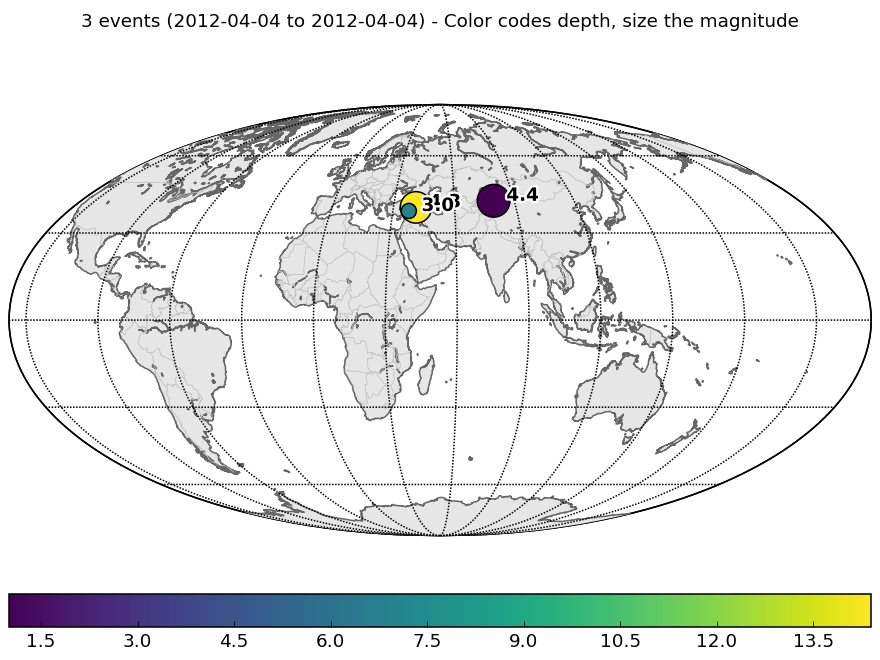
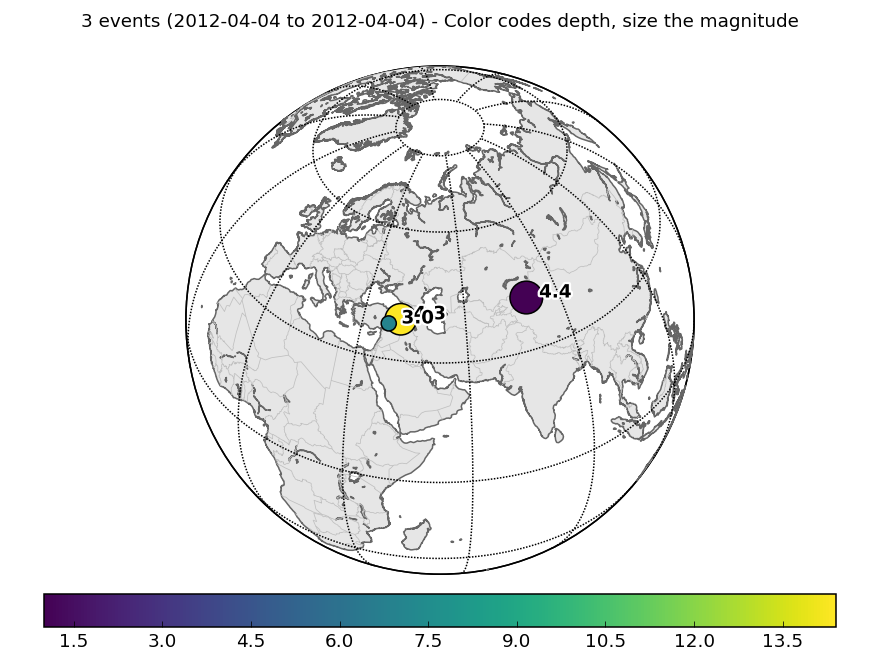
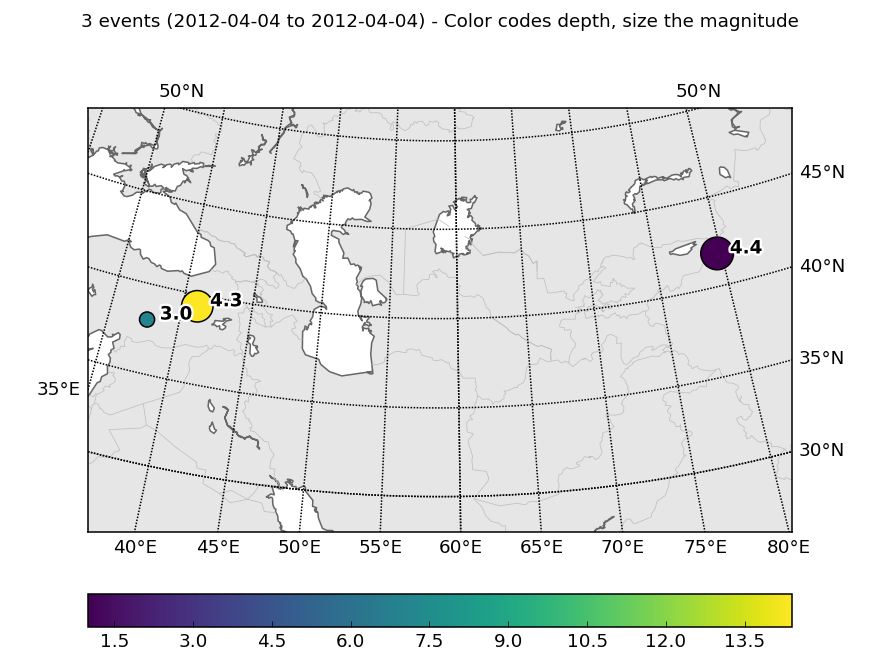
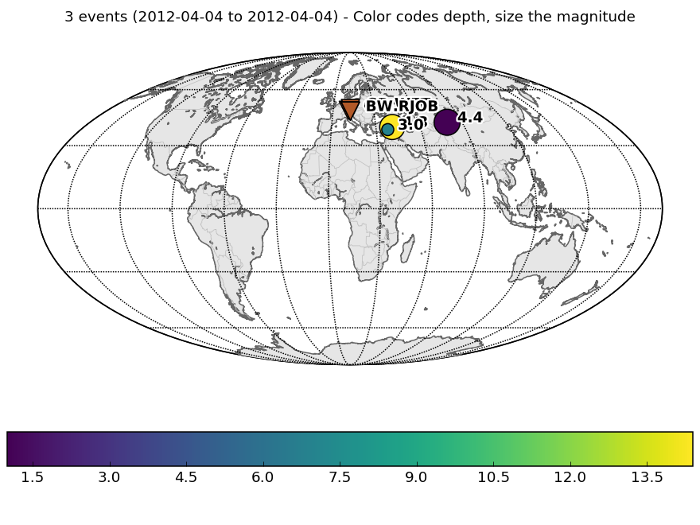

obspy.core.event.catalog.Catalog.plot¶
-
Catalog.plot(projection='global', resolution='l', continent_fill_color='0.9', water_fill_color='1.0', label='magnitude', color='depth', colormap=None, show=True, outfile=None, method=None, fig=None, title=None, **kwargs)[source]¶ Creates preview map of all events in current Catalog object.
Parameters: - projection (str, optional) –
The map projection. Currently supported are:
"global"(Will plot the whole world.)"ortho"(Will center around the mean lat/long.)"local"(Will plot around local events)
Defaults to “global”
- resolution (str, optional) –
Resolution of the boundary database to use. Will be based directly to the basemap module. Possible values are:
"c"(crude)"l"(low)"i"(intermediate)"h"(high)"f"(full)
Defaults to
"l" - continent_fill_color (Valid matplotlib color, optional) – Color of the continents. Defaults to
"0.9"which is a light gray. - water_fill_color (Valid matplotlib color, optional) – Color of all water bodies.
Defaults to
"white". - label (str, optional) –
Events will be labelled based on the chosen property. Possible values are:
"magnitude"None
Defaults to
"magnitude" - color (str, optional) –
The events will be color-coded based on the chosen property. Possible values are:
"date""depth"
Defaults to
"depth" - colormap (str, any matplotlib colormap, optional) – The colormap for color-coding the events. The event with the smallest property will have the color of one end of the colormap and the event with the biggest property the color of the other end with all other events in between. Defaults to None which will use the default colormap for the date encoding and a colormap going from green over yellow to red for the depth encoding.
- show (bool) – Whether to show the figure after plotting or not. Can be used to do further customization of the plot before showing it. Has no effect if outfile is specified.
- outfile (str) – Output file path to directly save the resulting image
(e.g.
"/tmp/image.png"). Overrides theshowoption, image will not be displayed interactively. The given path/filename is also used to automatically determine the output format. Supported file formats depend on your matplotlib backend. Most backends support png, pdf, ps, eps and svg. Defaults toNone. The figure is closed after saving it to file. - method (str) –
Method to use for plotting. Possible values are:
'basemap'to use the Basemap library'cartopy'to use the Cartopy libraryNoneto pick the best available library
Defaults to
None. - fig (
matplotlib.figure.Figure(ormatplotlib.axes.Axes)) – Figure instance to reuse, returned from a previous inventory/catalog plot call with method=basemap. If a previous basemap plot is reused, any kwargs regarding the basemap plot setup will be ignored (i.e. projection, resolution, continent_fill_color, water_fill_color). Note that multiple plots using colorbars likely are problematic, but e.g. one station plot (without colorbar) and one event plot (with colorbar) together should work well. If anAxesis supplied, the given axes is used to plot into and no colorbar will be produced. - title (str) – Title above plot. If left
None, an automatic title will be generated. Set to""for no title.
Returns: Figure instance with the plot.
Examples
Mollweide projection for global overview:
>>> from obspy import read_events >>> cat = read_events() >>> cat.plot()
(Source code, png, hires.png)
Orthographic projection:
>>> cat.plot(projection="ortho")
(Source code, png, hires.png)
Local (Albers equal area) projection:
>>> cat.plot(projection="local")
(Source code, png, hires.png)
Combining a station and event plot (uses basemap):
>>> from obspy import read_inventory, read_events >>> inv = read_inventory() >>> cat = read_events() >>> fig = inv.plot(method=basemap, show=False) >>> cat.plot(method=basemap, fig=fig)
(Source code, png, hires.png)
- projection (str, optional) –
{kind=link}
{kind=link}
{kind=link}
{kind=link}
{kind=link}
{kind=link}
{kind=link}
{kind=link}